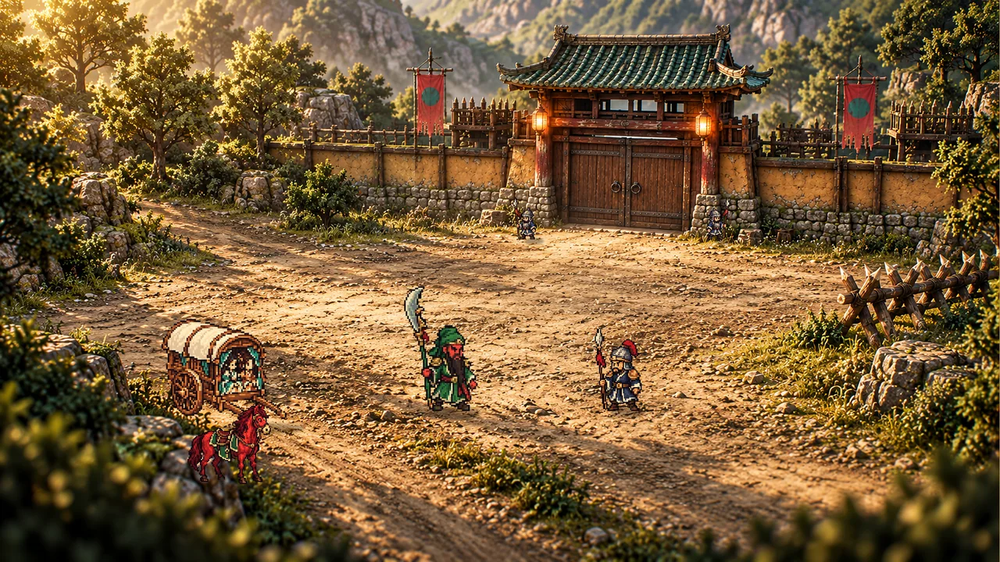
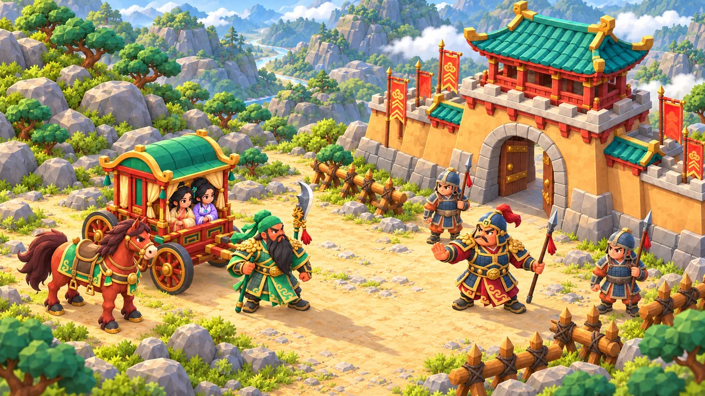

视频与动画
同学的短片待收录。
浏览同学们的东岭关场景设计和《过五关斩六将》歌词。
虞源正（Jack Yu）为同一场景设计了五套 2.5D 视觉方案。点击图片可看大图，每套还有自己的素材文件夹。

风格参考 Overcooked! 2
在 Drive 查看整套素材
风格参考 Cult of the Lamb
在 Drive 查看整套素材
风格参考 Octopath Traveler II
在 Drive 查看整套素材
风格参考 Tunic
在 Drive 查看整套素材